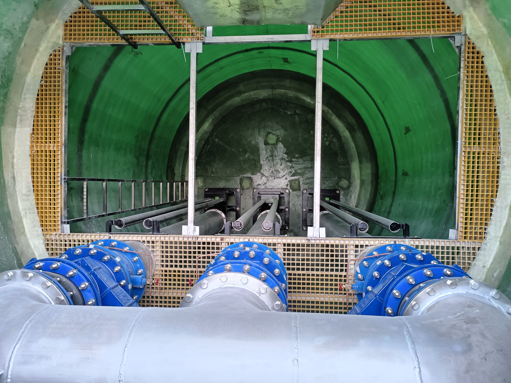
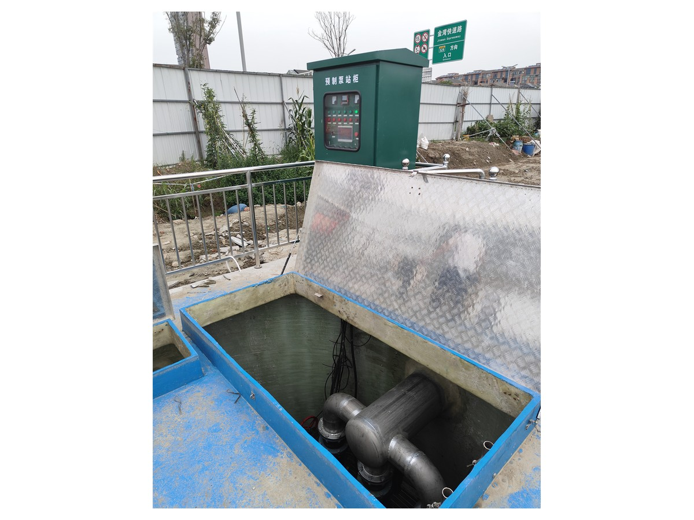
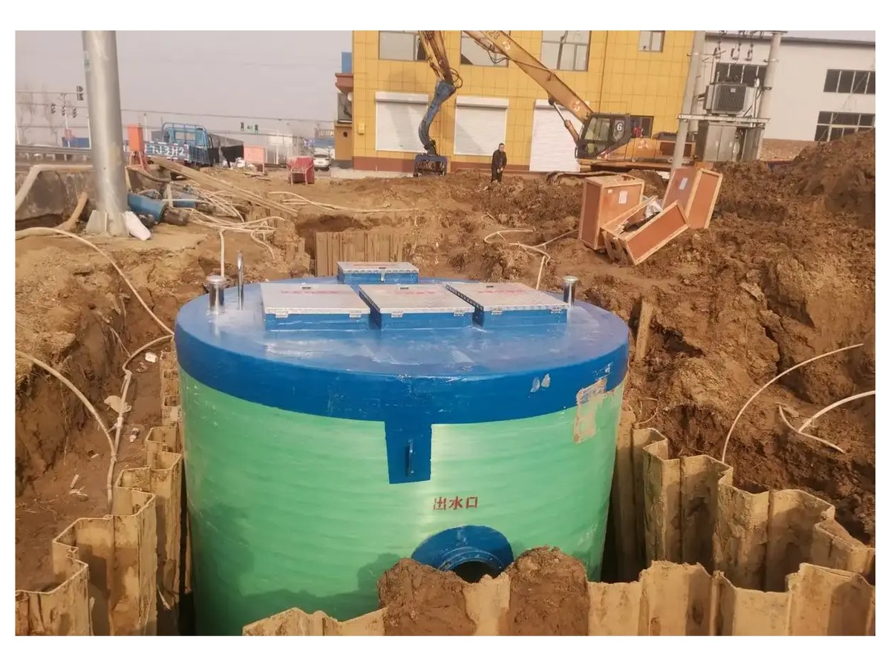
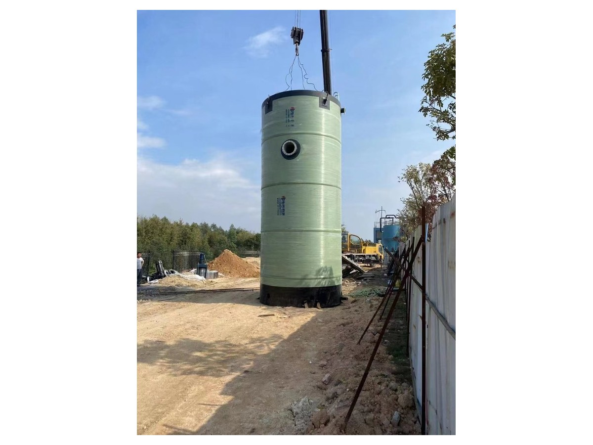
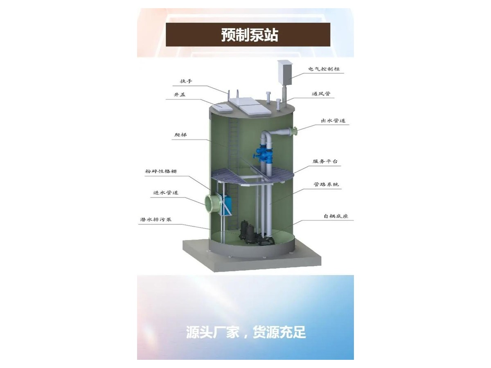
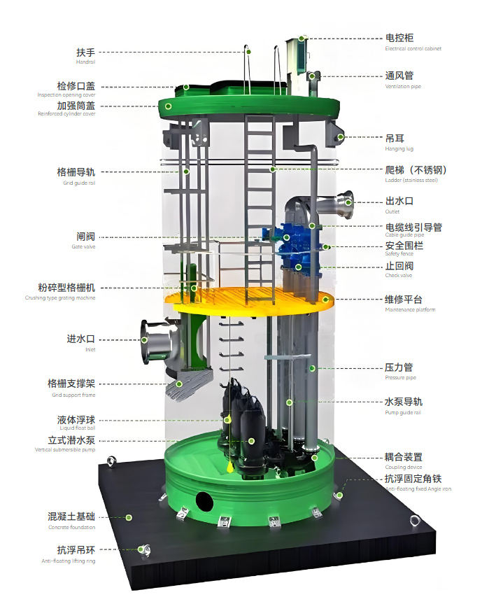

GUWEIENVIRONMENTAL
GUWEIENVIRONMENTALApplications
Municipal sewer separation, urban flood drainage, rural wastewater lifting, industrial parks, tunnels, scenic areas and residential drainage.
Integrated chambers, pump sets, pipework and controls for wastewater lifting and drainage projects.
Guwei pumping stations use high-strength filament-wound FRP chambers. The complete equipment is factory assembled and delivered for lifting into position and installation.

Municipal sewer separation, urban flood drainage, rural wastewater lifting, industrial parks, tunnels, scenic areas and residential drainage.
Direct manufacturing with flow- and head-based customization, drawings, technical handover, installation, commissioning and maintenance support. We welcome main contractors and municipal service providers.
View Pumping Station ProjectsEquipment appearance and configuration. Select an image to enlarge.









The diagram illustrates the main components. Final dimensions and configuration are subject to the project drawings.

Review the relationship between the chamber, access openings and internal equipment in the diagram.
Check pump sets, discharge pipes, valves and site connections.
Specify flow, head and available space to determine chamber dimensions, pumps and controls.
The station combines a chamber, pumps, pipework and controls to collect and lift wastewater or rainwater. Design takes account of flow, head and inlet/outlet elevations.
Capacity Matching · Upgrades · Operational Stability
Dispersed Sites · Low-temperature Operation · Effluent Reuse
Equipment Selection · Pump Room Layout · Drawing Coordination
Flood-season Conditions · Pump Redundancy · Remote Maintenance
Share the project type, capacity and contact details so we can discuss your technical requirements.
Online enquiries are not currently available. Please contact us by phone. 18026396076